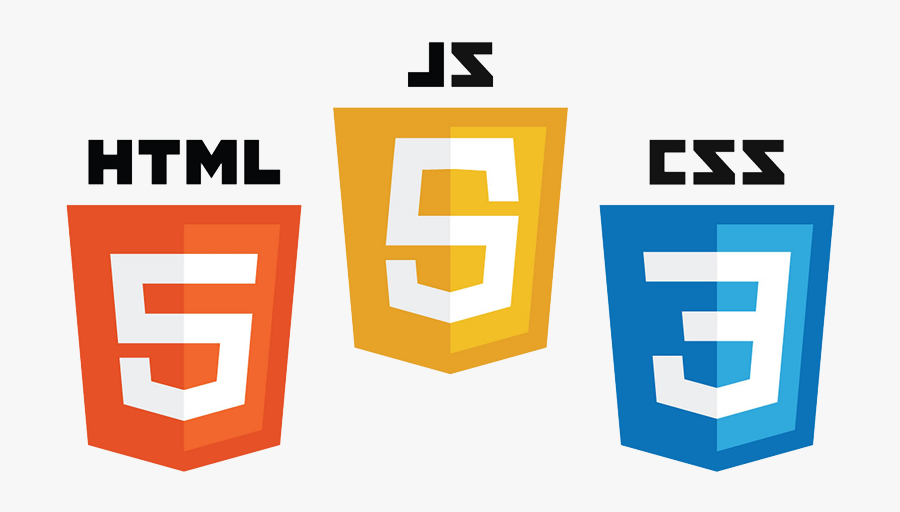

SELAMAT DATANG DI SITUS KAMI
Beranda
|
Kegiatan
|
Kontak
Perkenalan Diri
Nama : Dian Kiani Belinna Purbak
NIM : 41426036
Kelas : TRPL 2

Selamat datang! Temukan informasi yang kamu butuhkan di website ini.